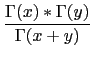
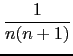
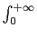

suivant: Les derivées de la
monter: Les réels
précédent: La fonction : Gamma
Table des matières
Index
La fonction  : Beta
: Beta
Beta a comme argument deux réels a, b.
Beta calcule les valeurs de la fonction au point a, b de
 2.
2.
On a par définition :
(x, y) = 
On a :
(1, 1) = 1
(n, 1) =
et :
(n, 2) = 
Beta(x,y) est défini pour x et y réels positifs (pour que
l'intégrale
e-ttx-1dt soit convergente) et pour x
et y non entiers négatifs.
On tape :
Beta(5,2)
On obtient :
1/30
On tape :
Beta(x,y)
On obtient :
Gamma(x)*Gamma(y)/Gamma(x+y)
On tape :
Beta(5.1,2.2)
On obtient :
0.0242053671402
Documentation de giac écrite par Renée De Graeve